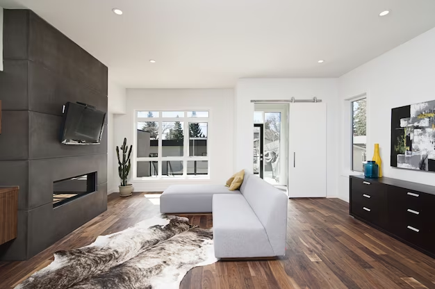
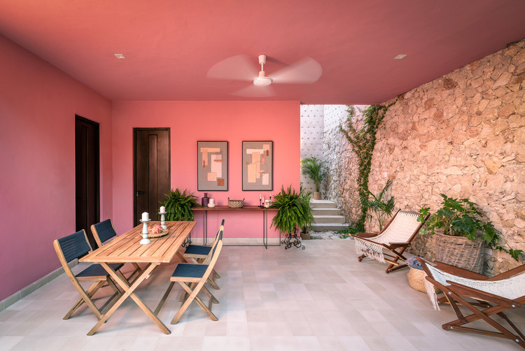

<div class="wrapper">
  <div class="img-property-container">
<<<<<<< Updated upstream
    <div class="left-arrow" (click)="prev()"><mat-icon>chevron_left</mat-icon></div>
    <div class="right-arrow" (click)="next()"><mat-icon>chevron_right</mat-icon></div>
    
   <!-- 
    
    -->
=======
    <div class="left-arrow" (click)="prev()">
      <mat-icon>chevron_left</mat-icon>
    </div>
    <div class="right-arrow" (click)="next()">
      <mat-icon>chevron_right</mat-icon>
    </div>
    
>>>>>>> Stashed changes
  </div>
  <div class="top-chip-holder">
    <div class="top-row">
      <div class="img-user-container">
        
        <ng-template #defaultImage>
          
        </ng-template>
      </div>
      <div class="inside-row-holder">
        <div class="first-row">
          <div class="user-information">
            <h1 class="base-color">{{ building?.owner?.name }}</h1>
            <h2 class="grey-color" style="font-size: 14px">- Proprietário</h2>
          </div>
        </div>
      </div>
    </div>
    <div class="chip-holder">
      <mat-chip-set>
        <mat-chip>
          <div class="align" style="display: flex; align-items: center">
            <mat-icon style="
                width: 10px;
                height: 10px;
                font-size: 10px;
                color: var(--primary-orange-color);
                margin-right: 3px;
              "><span class="material-symbols-outlined"> circle </span></mat-icon>Quartos: {{ building?.bedrooms }}
          </div>
        </mat-chip>
        <mat-chip>Banheiros: {{ building?.bathrooms }}</mat-chip>
        <mat-chip>Quartos: {{ building?.bedrooms }} </mat-chip>
        <mat-chip>Banheiros: {{ building?.bathrooms }}</mat-chip>
        <mat-chip>Quartos: {{ building?.bedrooms }} </mat-chip>
        <mat-chip>Banheiros: {{ building?.bathrooms }}</mat-chip>
      </mat-chip-set>
    </div>
  </div>
</div>